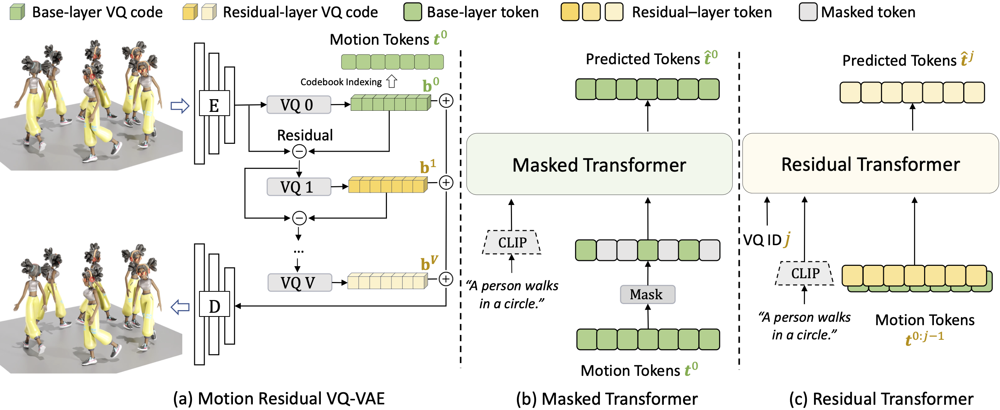

Method

In MoMask, a hierarchical quantization scheme is employed to represent human motion as multi-layer discrete motion tokens with high-fidelity details. Starting at the base layer, with a sequence of motion tokens obtained by vector quantization, the residual tokens of increasing orders are derived and stored at the subsequent layers of the hierarchy. This is consequently followed by two distinct bidirectional transformers. For the base-layer motion tokens, a Masked Transformer is designated to predict randomly masked motion tokens conditioned on text input at training stage. During generation (i.e. inference) stage, starting from an empty sequence, our Masked Transformer iteratively fills up the missing tokens; Subsequently, a Residual Transformer learns to progressively predict the next-layer tokens based on the results from current layer.